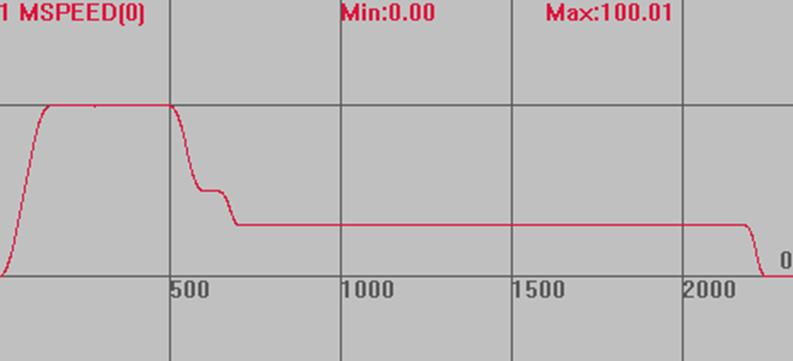

|
类型 |
轴参数 |
|
描述 |
轴速度比例 轴实际运动速度为SPEED*SPEED_RATIO。 用于运动中根据加减速的平滑速度改变。 |
|
语法 |
SPEED_RATIO(轴号) = value value：比例
不指定轴号时，默认使用BASE指令指定的轴号，插补运动可作用于所有轴，否则只作用于BASE的第一个轴。 在线命令不带轴号时，默认对轴0起作用。 |
|
适用控制器 |
最新固件支持 |
|
例子 |
RAPIDSTOP(2) WAIT IDLE SPEED_RATIO = 1 TRIGGER BASE(0) '选择轴0 DPOS=0 UNITS=100 SPEED = 100 ACCEL = 1000 DECEL = 1000 MERGE = ON SRAMP = 50 MOVE(100) DELAY(500) '等待0.5s SPEED_RATIO = 0.5 '速度降为50 WAIT UNTIL VP_SPEED < 80 DELAY(100) '等待0.1s SPEED_RATIO = 0.3 '速度降为30 END
速度曲线 VP_SPEED(0)垂直刻度100  |
|
相关指令 |